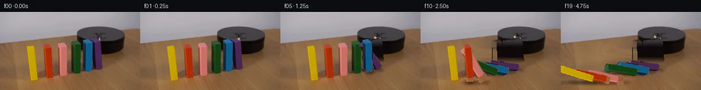

![首帧]()

Round 00
2026-11-05T15:17:28.617065+00:00像素候选变化代码 +327/−0inspection 更新
pixels 1a3ea5da4e42989f · code 44c01dd4db324c0e
查看本轮 generate.py 真实 diff
--- previous/generate.py
+++ current/generate.py
@@ -0,0 +1,327 @@
+"""PixelWorld-Vision-Input generator for case_0034.
+
+Rotating-stick domino cascade. Frame 0 is the untouched first_frame.png;
+frames 1-19 are pixel composited from cut-out block sprites, an inpainted
+background plate (wood-grain horizontal fill + measured platform gradient),
+soft contact shadows and a rotating wooden stick. All geometry is measured
+from frame 0 (see OBSERVATION.md).
+"""
+from pathlib import Path
+import numpy as np
+from PIL import Image, ImageDraw, ImageFilter
+from scipy import ndimage
+
+CASE = Path(__file__).parent
+TMP = CASE / '.tmp'
+TMP.mkdir(exist_ok=True)
+
+# ---------------------------------------------------------------- geometry
+H, W = 144, 256
+
+# hand-fitted silhouette polygons from frame-0 measurements
+POLYS = {
+ 'yellow': [(49, 62), (61, 62), (68, 128), (57, 128)],
+ 'red': [(81, 59), (94, 59), (96, 128), (83, 128)],
+ 'pink': [(106, 57), (122, 57), (124, 128), (106, 128)],
+ 'green': [(131, 53), (146, 53), (148, 113), (129, 113)],
+ 'blue': [(152, 50), (168, 50), (170, 110), (151, 110)],
+ 'purple': [(173, 48), (183, 48), (187, 105), (172, 105), (171, 75), (165, 52)],
+}
+PIVOT = { # rotation pivot (base contact), screen px
+ 'purple': (178.0, 105.0), 'blue': (160.5, 110.0), 'green': (139.0, 113.0),
+ 'pink': (114.5, 128.0), 'red': (88.5, 128.0), 'yellow': (58.5, 128.0),
+}
+CHAIN = ['purple', 'blue', 'green', 'pink', 'red', 'yellow'] # hit order
+T0 = {'purple': 3.0, 'blue': 4.5, 'green': 6.2, 'pink': 7.9, 'red': 9.6, 'yellow': 11.1}
+DUR = 5.0
+AMAX = {'purple': 80.0, 'blue': 80.0, 'green': 80.0, 'pink': 78.0,
+ 'red': 74.0, 'yellow': 66.0}
+HEIGHT_PX = {'purple': 56, 'blue': 59, 'green': 59, 'pink': 70, 'red': 68, 'yellow': 65}
+
+# stick
+HUB = (178.6, 42.3)
+L_HEAD = 7.8 # hub -> head center
+ALPHA0 = 68.0 # degrees, screen angle from +x (y down)
+ALPHA_STICK = [68.0, 80.0, 94.0, 108.0, 124.0, 138.0] + [150.0] * 14
+
+HRANGES = {'yellow': [(40, 80)], 'red': [(0, 28), (335, 360)],
+ 'pink': [(330, 360), (0, 25)], 'green': [(90, 155)],
+ 'blue': [(175, 235)], 'purple': [(250, 325)]}
+THR = {'yellow': (0.35, 0.35), 'red': (0.45, 0.20), 'pink': (0.16, 0.45),
+ 'green': (0.22, 0.12), 'blue': (0.30, 0.15), 'purple': (0.15, 0.12)}
+
+
+def smoothstep(x):
+ x = np.clip(x, 0.0, 1.0)
+ return x * x * (3 - 2 * x)
+
+
+def block_angle(name, t):
+ return AMAX[name] * smoothstep((t - T0[name]) / DUR)
+
+
+# ---------------------------------------------------------------- frame 0
+orig_pil = Image.open(CASE / 'first_frame.png').convert('RGB')
+ORIG = np.array(orig_pil)
+assert ORIG.shape == (144, 256, 3)
+
+_f = ORIG.astype(np.float32) / 255
+_r, _g, _b = _f[:, :, 0], _f[:, :, 1], _f[:, :, 2]
+_mx = _f.max(2)
+_mn = _f.min(2)
+_df = _mx - _mn
+HUE = np.zeros_like(_mx)
+_m = _df > 1e-6
+_i = (_mx == _r) & _m; HUE[_i] = ((_g - _b)[_i] / _df[_i]) % 6
+_i = (_mx == _g) & _m; HUE[_i] = ((_b - _r)[_i] / _df[_i]) + 2
+_i = (_mx == _b) & _m; HUE[_i] = ((_r - _g)[_i] / _df[_i]) + 4
+HUE *= 60
+SAT = np.where(_mx > 0, _df / np.maximum(_mx, 1e-6), 0)
+VAL = _mx
+YY, XX = np.mgrid[0:H, 0:W]
+
+
+def poly_mask(poly):
+ img = Image.new('L', (W, H), 0)
+ ImageDraw.Draw(img).polygon(poly, fill=255)
+ return np.array(img) > 0
… diff truncated; 240 more lines …